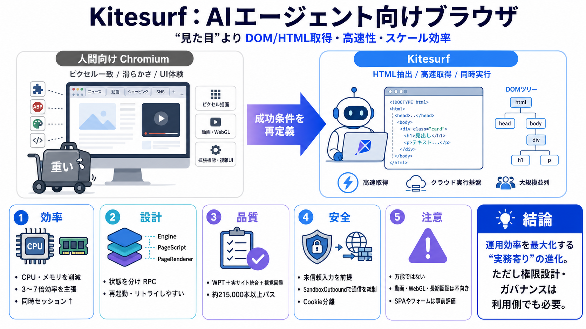

Kiteboarding
Kiteboarding or kitesurfing is a sport that involves using wind power with a large power kite to pull a rider across a w…

Cloudflareは、AIエージェントがWebタスクを大量実行する時代に合わせ、Workers上で動く“エージェント向けブラウザ”としてKitesurfを発表しました。
AIエージェントは「タブ体験」よりも、HTML/DOM取得・高速性・CPU/メモリ効率・スケール性を優先します。そのため、人間向けに厚いChromiumのオーバーヘッドがコストになります。
人間の最適化（ピクセル一致、滑らかな描画、拡張機能前提）ではなく、エージェントの成功条件（トークン化に直結する構造・必要な取得処理）を中心に設計します。
Kitesurfは、エージェントが実際に使う処理（HTML抽出、レンダリング、スクリーンショット等）に絞って軽量化し、同時実行を安く・速くすることを核にしています。
記事では、スクリーンショットやHTML抽出でChromiumよりCPU/メモリを大きく削減できると主張し、同時実行の維持に直結すると説明しています（3〜7倍程度の削減）。
WPT（Web Platform Tests）で適合性を検証し、実サイト統合テストや視覚的回帰テストで“現実のズレ”を埋める多層戦略を採ります。
エージェント向け最適化のため、動画・WebGL・高度なTLS指紋のような領域や、長時間の認証セッション維持は不向き（または未対応）として明記されています。
Workersの分離（isolation）を土台に、ページロードを“未信頼入力”として扱い、ネットワークアクセスをSandboxOutboundに集約して失敗時は403に落とす方針が示されています。
Engine・PageScript・PageRendererに分け、レンダリング側は状態を持たずRPCで呼び出す構造により、詰まりや失敗からのリスタート/リトライを安価にします。
KitesurfはCDP（Chrome DevTools Protocol）に対応し、Puppeteer/Playwright等から利用可能な形を整えて、クライアント実装の置き換えコストを抑える狙いがあります。
効率改善は差分も生むため、入力フォーム操作・複雑なSPAの相互作用・タイミング依存UIで性能/互換が変わる可能性があります。特に“部分的に動くが条件で壊れる”ケースが利用者にとって痛点になり得ます。
成功条件をエージェントに合わせ直し、Workers分離・RPC設計・大量テストで“運用効率”を最大化しようとする点が強い、という評価になります。一方で、AI特有の脅威（プロンプトインジェクション等）はブラウザ単体では完全解決できないため、権限設計やガバナンスは利用側でもセットで考える必要があります。
Kiteboarding or kitesurfing is a sport that involves using wind power with a large power kite to pull a rider across a w…
Kitesurfing, also known as kiteboarding, is a wind-powered water sport that combines aspects of board sports like surfin…
If you're thinking about kitesurfing, or about to take lessons, this video is for you. It covers: 0:00 lesson steps 3:52…
A highly detailed kitesurfing upwind tutorial. Kiteboarding tutorial video which is covering: leaning onto the lines, ed…
We offer kiteboarding, kite-foiling, wing-surfing and wing-foiling lessons in South Florida -predominantly in the Pompan…